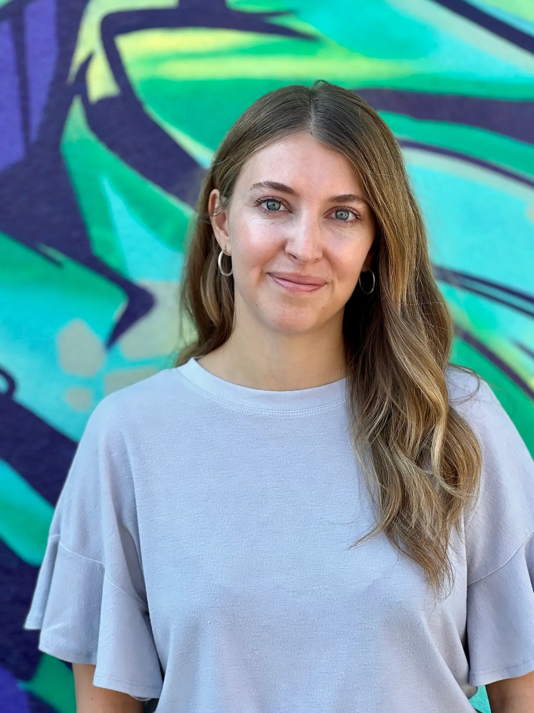

Tessa Malsam is a film editor based in Denver, Colorado, known for her work on acclaimed documentary projects. Her credits include the Emmy Award-winning Netflix documentary The Social Dilemma, the Patagonia feature Newtok, and The Grab, the latest exposé from filmmaker Gabriela Cowperthwaite (director of Blackfish). Tessa is an alumna of the prestigious Karen Schmeer Film Editing Fellowship and is currently editing multiple feature documentaries, including I Was Born This Way, a project by Oscar and Emmy-winning filmmakers Daniel Junge and Sam Pollard.
Tessa earned her BA in Journalism from the University of Colorado Boulder. Early in her career, she worked in Los Angeles, where she assisted in editing nationally broadcast campaigns for a diverse range of clients before transitioning to focus on documentary editing.